Mybatis 1.简介 1.1 什么是Mybatis？ 中文文档：https://mybatis.org/mybatis-3/zh/index.html
学习代码：https://gitee.com/two-dogs-speak/mybatis-study
1 2 3 4 5 6 MyBatis 是一款优秀的持久层框架 它支持定制化 SQL、存储过程以及高级映射。 MyBatis 避免了几乎所有的 JDBC 代码和手动设置参数以及获取结果集。 MyBatis 可以使用简单的 XML 或注解来配置和映射原生类型、接口和 Java 的 POJO（Plain Old Java Objects，普通老式 Java 对象）为数据库中的记录。 MyBatis 本是apache的一个开源项目iBatis, 2010 年这个项目由apache software foundation 迁移到了google code，并且改名为MyBatis 。 2013 年11 月迁移到Github
如何获得Mybatis？
1 2 3 4 5 6 <dependency > <groupId > org.mybatis</groupId > <artifactId > mybatis</artifactId > <version > 3.5.2</version > </dependency >
Github ： https://github.com/mybatis/mybatis-3/releases
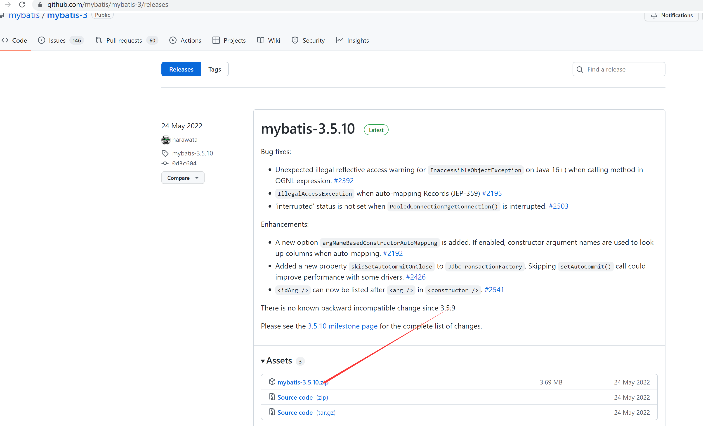
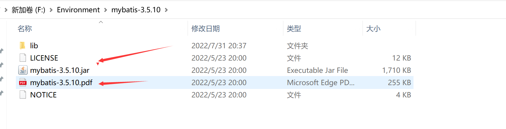
中文文档：https://mybatis.org/mybatis-3/zh/index.html
1.2 持久化
数据持久化
1 2 3 4 持久化就是将程序的数据在持久状态和瞬时状态转化的过程 内存：断电即失 数据库(Jdbc)，io文件持久化。 生活：冷藏. 罐头。
为什么需要需要持久化？
1.3 持久层 Dao层，Service层，Controller层….
1.4 为什么需要Mybatis？ 1 2 3 4 5 6 7 8 9 10 11 12 帮助程序猿将数据存入到数据库中。 方便 传统的JDBC代码太复杂了。简化。框架。自动化。 不用Mybatis也可以。更容易上手。 技术没有高低之分 优点： 简单易学 灵活 sql和代码的分离，提高了可维护性。 提供映射标签，支持对象与数据库的orm字段关系映射 提供对象关系映射标签，支持对象关系组建维护 提供xml标签，支持编写动态sql。
2.CRUD 2.1 namespace namespace中的包名要和 Dao/mapper 接口的包名一致！
2.2 select 选择，查询语句;
1 2 3 id : 就是对应的namespace中的方法名； resultType：Sql语句执行的返回值！ parameterType ： 参数类型！
(1) 编写接口
1 2 User getUserById (int id) ;
(2) 编写对应的mapper中的sql语句
1 2 3 <select id ="getUserById" parameterType ="int" resultType ="com.yang.pojo.User" > select * from mybatis.user where id = #{id} </select >
(3)测试
1 2 3 4 5 6 7 8 9 10 11 @Test public void getUserById () { SqlSession sqlSession = MybatisUtils.getSqlSession(); UserMapper mapper = sqlSession.getMapper(UserMapper.class); User user = mapper.getUserById(1 ); System.out.println(user); sqlSession.close(); }
2.3 Insert 1 2 3 4 <insert id ="addUser" parameterType ="com.kuang.pojo.User" > insert into mybatis.user (id, name, pwd) values (#{id},#{name},#{pwd}); </insert >
1 2 3 4 5 6 7 8 9 10 11 12 13 14 @Test public void addUser () { SqlSession sqlSession = MybatisUtils.getSqlSession(); UserMapper mapper = sqlSession.getMapper(UserMapper.class); User user = new User (7 , "lll" , "888888" ); int i = mapper.addUser(user); if (i>0 ){ System.out.println("成功" ); } sqlSession.commit(); sqlSession.close(); }
2.4 update 1 2 3 <update id ="updateUser" parameterType ="com.kuang.pojo.User" > update mybatis.user set name=#{name},pwd=#{pwd} where id = #{id} ; </update >
1 2 3 4 5 6 7 8 9 10 11 12 @Test public void updateUser () { SqlSession sqlSession = MybatisUtils.getSqlSession(); UserMapper mapper = sqlSession.getMapper(UserMapper.class); int i = mapper.updateUser(new User (4 , "mmm" , "888888" )); if (i>0 ){ System.out.println("成功" ); } sqlSession.commit(); sqlSession.close(); }
2.5 Delete 1 2 3 <delete id ="deleteUser" parameterType ="int" > delete from mybatis.user where id = #{id}; </delete >
1 2 3 4 5 6 7 8 9 10 11 12 @Test public void deleteUser () { SqlSession sqlSession = MybatisUtils.getSqlSession(); UserMapper mapper = sqlSession.getMapper(UserMapper.class); int i = mapper.deleteUser(7 ); if (i>0 ){ System.out.println("成功" ); } sqlSession.commit(); sqlSession.close(); }
注意点：增删改需要提交事务！
2.6 万能Map 假设，我们的实体类，或者数据库中的表，字段或者参数过多，我们应当考虑使用Map！
1 2 int addUser2 (Map<String,Object> map) ;
1 2 3 4 <insert id ="addUser" parameterType ="map" > insert into mybatis.user (id, pwd) values (#{userid},#{passWord}); </insert >
1 2 3 4 5 6 7 8 9 10 11 12 13 14 15 16 17 18 19 20 21 22 23 24 @Test public void addUser2 () { SqlSession sqlSession = MybatisUtils.getSqlSession(); UserMapper mapper = sqlSession.getMapper(UserMapper.class); Map<String, Object> map = new HashMap <String, Object>(); map.put("userid" ,5 ); map.put("passWord" ,"2222333" ); mapper.addUser2(map); sqlSession.close(); } Map传递参数，直接在sql中取出key即可！ 【parameterType="map" 】 对象传递参数，直接在sql中取对象的属性即可！【parameterType="Object" 】 只有一个基本类型参数的情况下，可以直接在sql中取到！ 多个参数用Map，或者注解！
2.7 模糊查询 1 2 3 List<User> getUserLike (String value) ;
1 2 3 4 <select id ="getUserLike" resultType ="com.yang.pojo.User" > select * from mybatis.user where name like #{value} </select >
1 2 3 4 5 6 7 8 9 10 11 @Test public void getUserLike () { SqlSession sqlSession = MybatisUtils.getSqlSession(); UserMapper mapper = sqlSession.getMapper(UserMapper.class); List<User> userList = mapper.getUserLike("%王%" ); for (User user : userList) { System.out.println(user); } sqlSession.commit(); sqlSession.close(); }
模糊查询实现方式
1.Java代码执行的时候，传递通配符 % %
1 List<User> userList = mapper.getUserLike("%王%" );
2.在sql拼接中使用通配符
1 select * from mybatis.user where name like "%" #{value}"%"
2.8 步骤
导入maven依赖pom.xml
1 2 3 4 5 6 7 8 9 10 11 12 13 14 15 16 17 18 <dependency > <groupId > org.mybatis</groupId > <artifactId > mybatis</artifactId > <version > 3.5.10</version > </dependency > <dependency > <groupId > mysql</groupId > <artifactId > mysql-connector-java</artifactId > <version > 5.1.47</version > </dependency > <dependency > <groupId > junit</groupId > <artifactId > junit</artifactId > <version > 4.13</version > </dependency >
mybatis核心配置文件：resources/mybatis-config.xml
1 2 3 4 5 6 7 8 9 10 11 12 13 14 15 16 17 18 19 20 21 22 23 24 <?xml version="1.0" encoding="UTF8" ?> <!DOCTYPE configuration PUBLIC "-//mybatis.org//DTD Config 3.0//EN" "http://mybatis.org/dtd/mybatis-3-config.dtd" > <configuration > <environments default ="development" > <environment id ="development" > <transactionManager type ="JDBC" /> <dataSource type ="POOLED" > <property name ="driver" value ="com.mysql.jdbc.Driver" /> <property name ="url" value ="jdbc:mysql://localhost:3306/mybatis?useSSL=true& useUnicode=true& characterEncoding=utf-8" /> <property name ="username" value ="root" /> <property name ="password" value ="123456" /> </dataSource > </environment > </environments > <mappers > <mapper resource ="com/yang/dao/UserMapper.xml" /> </mappers > </configuration >
mybatis工具类MybatisUtils
1 2 3 4 5 6 7 8 9 10 11 12 13 14 15 16 17 18 19 20 21 22 23 24 25 26 27 28 29 package com.yang.utils;import org.apache.ibatis.io.Resources;import org.apache.ibatis.session.SqlSession;import org.apache.ibatis.session.SqlSessionFactory;import org.apache.ibatis.session.SqlSessionFactoryBuilder;import java.io.IOException;import java.io.InputStream;public class MybatisUtils { private static SqlSessionFactory sqlSessionFactory; static { try { String resource = "mybatis-config.xml" ; InputStream inputStream = Resources.getResourceAsStream(resource); sqlSessionFactory = new SqlSessionFactoryBuilder ().build(inputStream); } catch (IOException e) { e.printStackTrace(); } } public static SqlSession getSqlSession () { return sqlSessionFactory.openSession(); } }
实体类:pojo/User.java
1 2 3 4 5 6 7 8 9 10 11 12 13 14 15 16 17 18 19 20 21 22 23 24 25 26 27 28 29 30 31 32 33 34 35 36 37 38 39 40 41 42 43 44 45 46 47 48 package com.yang.pojo;public class User { private int id; private String name; private String pwd; public User () { } public User (int id, String name, String pwd) { this .id = id; this .name = name; this .pwd = pwd; } public int getId () { return id; } public void setId (int id) { this .id = id; } public String getName () { return name; } public void setName (String name) { this .name = name; } public String getPwd () { return pwd; } public void setPwd (String pwd) { this .pwd = pwd; } @Override public String toString () { return "User{" + "id=" + id + ", name='" + name + '\'' + ", pwd='" + pwd + '\'' + '}' ; } }
Dao
1 2 3 4 5 6 7 8 9 10 11 12 13 14 15 16 17 18 19 20 21 22 23 package com.yang.dao;import com.yang.pojo.User;import java.util.List;import java.util.Map;public interface UserMapper { List<User> getUserLike (String value) ; List<User> getUserList () ; User getUserById (int id) ; User getUserById2 (Map<String,Object> map) ; int addUser (User user) ; int addUser2 (Map<String,Object> map) ; int updateUser (User user) ; int deleteUser (int id) ; }
Mapper接口实现：UserMapper.xml
1 2 3 4 5 6 7 8 9 10 11 12 13 14 15 16 17 18 19 20 21 22 23 24 25 26 27 28 29 30 31 32 33 34 <?xml version="1.0" encoding="UTF8" ?> <!DOCTYPE mapper PUBLIC "-//mybatis.org//DTD Mapper 3.0//EN" "http://mybatis.org/dtd/mybatis-3-mapper.dtd" > <mapper namespace ="com.yang.dao.UserMapper" > <select id ="getUserLike" resultType ="com.yang.pojo.User" > select * from mybatis.user where name like #{value} </select > <select id ="getUserList" resultType ="com.yang.pojo.User" > select * from mybatis.user </select > <select id ="getUserById" resultType ="com.yang.pojo.User" parameterType ="int" > select * from mybatis.user where id=#{id} </select > <select id ="getUserById2" resultType ="com.yang.pojo.User" parameterType ="map" > select * from mybatis.user where id=#{id} and name =#{name}; </select > <insert id ="addUser" parameterType ="com.yang.pojo.User" > insert into mybatis.user (id,name,pwd) values (#{id},#{name},#{pwd}) </insert > <insert id ="addUser2" parameterType ="map" > insert into mybatis.user (id,pwd) values (#{userid},#{password}) </insert > <update id ="updateUser" parameterType ="com.yang.pojo.User" > update mybatis.user set name=#{name },pwd=#{pwd} where id=#{id} </update > <delete id ="deleteUser" parameterType ="int" > delete from mybatis.user where id=#{id} </delete > </mapper >
测试
1 2 3 4 5 6 7 8 9 10 11 12 13 14 15 16 17 18 19 20 21 22 23 24 25 26 27 28 29 30 31 32 33 34 35 36 37 38 39 40 41 42 43 44 45 46 47 48 49 50 51 52 53 54 55 56 57 58 59 60 61 62 63 64 65 66 67 68 69 70 71 72 73 74 75 76 77 78 79 80 81 82 83 84 85 86 87 88 89 90 91 92 93 94 95 96 97 98 99 100 101 102 103 104 105 106 107 108 109 110 111 112 113 114 115 116 package com.yang.dao;import com.yang.pojo.User;import com.yang.utils.MybatisUtils;import org.apache.ibatis.session.SqlSession;import org.junit.Test;import java.util.HashMap;import java.util.List;import java.util.Map;public class UserDaoTest { @Test public void getUserLike () { SqlSession sqlSession = MybatisUtils.getSqlSession(); UserMapper mapper = sqlSession.getMapper(UserMapper.class); String v1 = "王" ; List<User> userList = mapper.getUserLike("%" + v1 + "%" ); for (User user : userList) { System.out.println(user); } sqlSession.commit(); sqlSession.close(); } @Test public void test () { SqlSession sqlSession=null ; try { sqlSession = MybatisUtils.getSqlSession(); UserMapper userDao = sqlSession.getMapper(UserMapper.class); List<User> userList = userDao.getUserList(); for (User user : userList) { System.out.println(user); } }catch (Exception e){ e.printStackTrace(); }finally { sqlSession.close(); } } @Test public void getUserById () { SqlSession sqlSession = MybatisUtils.getSqlSession(); UserMapper mapper = sqlSession.getMapper(UserMapper.class); User user = mapper.getUserById(1 ); System.out.println(user); sqlSession.close(); } @Test public void getUserById2 () { SqlSession sqlSession = MybatisUtils.getSqlSession(); UserMapper mapper = sqlSession.getMapper(UserMapper.class); Map<String, Object> map = new HashMap <String, Object>(); map.put("id" ,1 ); map.put("name" ,"杨同宇" ); User user = mapper.getUserById2(map); System.out.println(user); sqlSession.commit(); sqlSession.close(); } @Test public void addUser () { SqlSession sqlSession = MybatisUtils.getSqlSession(); UserMapper mapper = sqlSession.getMapper(UserMapper.class); User user = new User (7 , "lll" , "888888" ); int i = mapper.addUser(user); if (i>0 ){ System.out.println("成功" ); } sqlSession.commit(); sqlSession.close(); } @Test public void updateUser () { SqlSession sqlSession = MybatisUtils.getSqlSession(); UserMapper mapper = sqlSession.getMapper(UserMapper.class); int i = mapper.updateUser(new User (4 , "mmm" , "888888" )); if (i>0 ){ System.out.println("成功" ); } sqlSession.commit(); sqlSession.close(); } @Test public void addUser2 () { SqlSession sqlSession = MybatisUtils.getSqlSession(); UserMapper mapper = sqlSession.getMapper(UserMapper.class); Map<String, Object> map = new HashMap <String, Object>(); map.put("userid" ,4 ); map.put("password" ,"222233" ); mapper.addUser2(map); sqlSession.commit(); sqlSession.close(); } @Test public void deleteUser () { SqlSession sqlSession = MybatisUtils.getSqlSession(); UserMapper mapper = sqlSession.getMapper(UserMapper.class); int i = mapper.deleteUser(7 ); if (i>0 ){ System.out.println("成功" ); } sqlSession.commit(); sqlSession.close(); } }
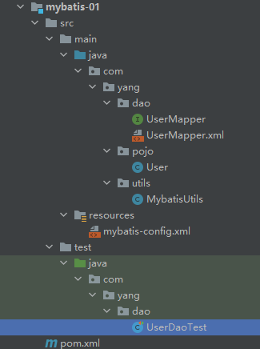
3.配置解析 3.1 核心配置文件 mybatis-config.xml
MyBatis 的配置文件包含了会深深影响 MyBatis 行为的设置和属性信息。
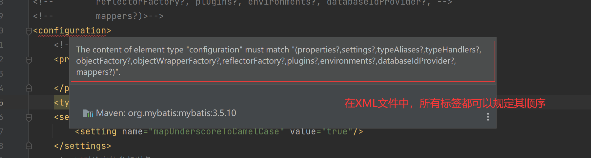
1 2 3 4 5 6 7 8 9 10 11 12 13 configuration（配置） properties（属性） settings（设置） typeAliases（类型别名） typeHandlers（类型处理器） objectFactory（对象工厂） plugins（插件） environments（环境配置） environment（环境变量） transactionManager（事务管理器） dataSource（数据源） databaseIdProvider（数据库厂商标识） mappers（映射器）
3.2 环境配置（environments） MyBatis 可以配置成适应多种环境
尽管可以配置多个环境，但每个 SqlSessionFactory 实例只能选择一种环境
学会使用配置多套运行环境！
Mybatis默认的事务管理器就是 JDBC ， 连接池 ： POOLED
3.3 属性（properties） 可以通过properties属性来实现引用配置文件
这些属性都是可外部配置且可动态替换的，既可以在典型的 Java 属性文件中配置，亦可通过 properties 元素的子元素来传递。【db.properties】
编写一个配置文件:
1 2 3 4 driver=com.mysql.jdbc.Driver url=jdbc:mysql://localhost:3306/mybatis?useSSL=true&useUnicode=true&characterEncoding=UTF-8 username=root password=123456
在核心配置文件中映入
1 2 3 4 5 <properties resource ="db.properties" > <property name ="username" value ="root" /> <property name ="pwd" value ="11111" /> </properties >
可以直接引入外部文件如果两个文件有同一个字段，优先使用外部配置文件的！
1 2 3 4 5 6 7 8 9 10 11 12 13 14 15 16 17 18 19 20 21 <environments default ="development" > <environment id ="development" > <transactionManager type ="JDBC" /> <dataSource type ="POOLED" > <property name ="driver" value ="${driver}" /> <property name ="url" value ="${url}" /> <property name ="username" value ="${username}" /> <property name ="password" value ="${password}" /> </dataSource > </environment > <environment id ="test" > <transactionManager type ="MANAGED" /> <dataSource type ="POOLED" > <property name ="driver" value ="${driver}" /> <property name ="url" value ="${url}" /> <property name ="username" value ="${username}" /> <property name ="password" value ="${password}" /> </dataSource > </environment > </environments >
3.4 类型别名（typeAliases） 类型别名是为 Java 类型设置一个短的名字。
1 2 3 4 <typeAliases > <typeAlias type ="com.yang.pojo.User" alias ="User" /> </typeAliases >
也可以指定一个包名，MyBatis 会在包名下面搜索需要的 Java Bean，比如：
扫描实体类的包，它的默认别名就为这个类的 类名，首字母小写！
1 2 3 4 <typeAliases > <package name ="com.kuang.pojo" /> </typeAliases >
在实体类比较少的时候，使用第一种方式
如果实体类十分多，建议使用第二种
第一种可以DIY别名，第二种则不行，如果非要改，需要在实体上增加注解
1 2 @Alias("user") public class User {}
3.5 设置 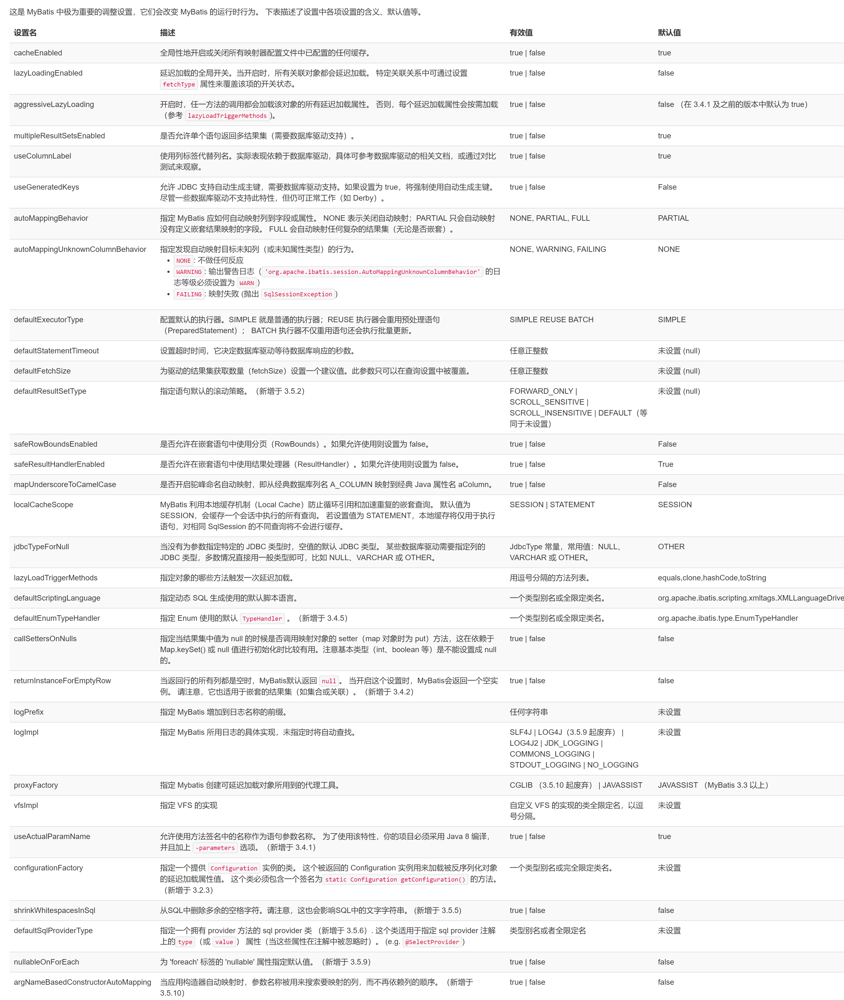
一个配置完整的 settings 元素的示例如下：
1 2 3 4 5 6 7 8 9 10 11 12 13 14 15 16 17 <settings > <setting name ="cacheEnabled" value ="true" /> <setting name ="lazyLoadingEnabled" value ="true" /> <setting name ="multipleResultSetsEnabled" value ="true" /> <setting name ="useColumnLabel" value ="true" /> <setting name ="useGeneratedKeys" value ="false" /> <setting name ="autoMappingBehavior" value ="PARTIAL" /> <setting name ="autoMappingUnknownColumnBehavior" value ="WARNING" /> <setting name ="defaultExecutorType" value ="SIMPLE" /> <setting name ="defaultStatementTimeout" value ="25" /> <setting name ="defaultFetchSize" value ="100" /> <setting name ="safeRowBoundsEnabled" value ="false" /> <setting name ="mapUnderscoreToCamelCase" value ="false" /> <setting name ="localCacheScope" value ="SESSION" /> <setting name ="jdbcTypeForNull" value ="OTHER" /> <setting name ="lazyLoadTriggerMethods" value ="equals,clone,hashCode,toString" /> </settings >
日志、驼峰命名自动映射和缓存…
1 2 3 4 5 6 7 8 9 10 11 <settings > <setting name ="logImpl" value ="LOG4J" /> <setting name ="cacheEnabled" value ="true" /> <setting name ="mapUnderscoreToCamelCase" value ="true" /> ... </settings >
3.6 其他配置 1 2 3 4 5 6 typeHandlers（类型处理器）:https://mybatis.org/mybatis-3/zh/configuration.html#typeHandlers objectFactory（对象工厂）:https://mybatis.org/mybatis-3/zh/configuration.html#objectFactory plugins插件: mybatis-generator-core mybatis-plus 通用mapper
3.7 映射器（mappers） MapperRegistry：注册绑定我们的Mapper文件；
方式一： 【推荐使用】
1 2 3 4 <mappers > <mapper resource ="com/yang/dao/UserMapper.xml" /> </mappers >
方式二：使用class文件绑定注册
1 2 3 4 <!--每一个Mapper.XML都需要在Mybatis核心配置文件中注册！--> <mappers> <mapper class="com.yang.dao.UserMapper"/> </mappers>
注意点：
接口和他的Mapper配置文件必须同名！
方式三：使用扫描包进行注入绑定
1 2 3 4 <!--每一个Mapper.XML都需要在Mybatis核心配置文件中注册！--> <mappers> <package name="com.yang.dao"/> </mappers>
注意点：
接口和他的Mapper配置文件必须同名！
3.8 生命周期和作用域
生命周期，和作用域，是至关重要的，因为错误的使用会导致非常严重的并发问题。
SqlSessionFactoryBuilder：
1 2 一旦创建了 SqlSessionFactory，就不再需要它了 局部变量
SqlSessionFactory：
1 2 3 4 说白了就是可以想象为 ：数据库连接池 SqlSessionFactory 一旦被创建就应该在应用的运行期间一直存在，没有任何理由丢弃它或重新创建另一个实例。 因此 SqlSessionFactory 的最佳作用域是应用作用域。 最简单的就是使用单例模式或者静态单例模式。
SqlSession
1 2 3 连接到连接池的一个请求！ SqlSession 的实例不是线程安全的，因此是不能被共享的，所以它的最佳的作用域是请求或方法作用域。 用完之后需要赶紧关闭，否则资源被占用！
1 2 3 4 5 6 7 8 9 10 11 12 13 14 15 16 17 18 19 20 21 22 23 24 25 26 27 28 29 package com.yang.utils;import org.apache.ibatis.io.Resources;import org.apache.ibatis.session.SqlSession;import org.apache.ibatis.session.SqlSessionFactory;import org.apache.ibatis.session.SqlSessionFactoryBuilder;import java.io.IOException;import java.io.InputStream;public class MybatisUtils { private static SqlSessionFactory sqlSessionFactory; static { try { String resource = "mybatis-config.xml" ; InputStream inputStream = Resources.getResourceAsStream(resource); sqlSessionFactory = new SqlSessionFactoryBuilder ().build(inputStream); } catch (IOException e) { e.printStackTrace(); } } public static SqlSession getSqlSession () { return sqlSessionFactory.openSession(); } }
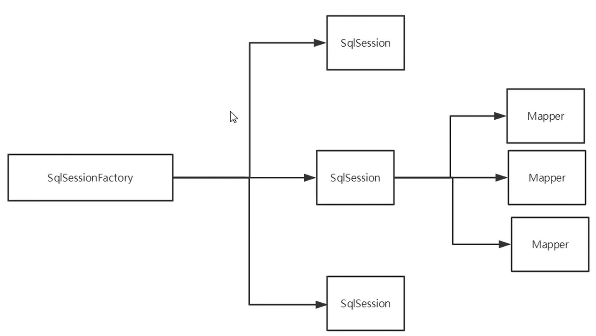
这里面的每一个Mapper，就代表一个具体的业务！
4.解决属性名和字段名不一致的问题 1 2 id name pwd = >数据库表字段名 id name password = >实体类属性
方式一：起别名
1 2 3 <select id ="getUserById" resultType ="com.yang.pojo.User" > select id,name,pwd as password from mybatis.user where id = #{id} </select >
方式二：resultMap
1 2 3 4 5 6 7 8 9 10 11 <resultMap id ="UserMap" type ="User" > <result column ="id" property ="id" /> <result column ="name" property ="name" /> <result column ="pwd" property ="password" /> </resultMap > <select id ="getUserById" resultMap ="UserMap" > select * from mybatis.user where id = #{id} </select >
5.日志 5.1 日志工厂 1 2 3 4 5 6 7 8 9 10 11 12 13 SLF4J LOG4J 【掌握】 LOG4J2 JDK_LOGGING COMMONS_LOGGING STDOUT_LOGGING 【掌握】 NO_LOGGING
在Mybatis中具体使用那个一日志实现，在设置中设定！
STDOUT_LOGGING标准日志输出
在mybatis核心配置文件中，配置我们的日志！
1 2 3 <settings > <setting name ="logImpl" value ="STDOUT_LOGGING" /> </settings >
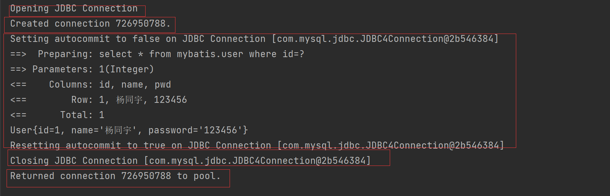
5.2 Log4j
什么是Log4j？
Log4j是Apache的一个开源项目，通过使用Log4j，我们可以控制日志信息输送的目的地是控制台、文件、GUI组件
可以控制每一条日志的输出格式
通过定义每一条日志信息的级别，我们能够更加细致地控制日志的生成过程
通过一个配置文件来灵活地进行配置，而不需要修改应用的代码
(1) 先导入log4j的包
1 2 3 4 5 6 <dependency > <groupId > log4j</groupId > <artifactId > log4j</artifactId > <version > 1.2.17</version > </dependency >
(2) log4j.properties
1 2 3 4 5 6 7 8 9 10 11 12 13 14 15 16 17 18 19 20 21 22 23 24 log4j.rootLogger =DEBUG,console,file log4j.appender.console = org.apache.log4j.ConsoleAppender log4j.appender.console.Target = System.out log4j.appender.console.Threshold =DEBUG log4j.appender.console.layout = org.apache.log4j.PatternLayout log4j.appender.console.layout.ConversionPattern =[%c]-%m%n log4j.appender.file = org.apache.log4j.RollingFileAppender log4j.appender.file.File =./log/kuang.log log4j.appender.file.MaxFileSize =10mb log4j.appender.file.Threshold =DEBUG log4j.appender.file.layout =org.apache.log4j.PatternLayout log4j.appender.file.layout.ConversionPattern =[%p][%d{yy-MM-dd}][%c]%m%n log4j.logger.org.mybatis =DEBUG log4j.logger.java.sql =DEBUG log4j.logger.java.sql.Statement =DEBUG log4j.logger.java.sql.ResultSet =DEBUG log4j.logger.java.sql.PreparedStatement =DEBUG
(3) 配置log4j为日志的实现
1 2 3 <settings > <setting name ="logImpl" value ="LOG4J" /> </settings >
简单使用
(1) 在要使用Log4j 的类中，导入包 import org.apache.log4j.Logger;
(2) 日志对象，参数为当前类的class
1 static Logger logger = Logger.getLogger(UserDaoTest.class);
(3)日志级别
1 2 3 logger.info("info:进入了testLog4j" ); logger.debug("debug:进入了testLog4j" ); logger.error("error:进入了testLog4j" );
6.分页
思考：为什么要分页？
6.1 使用Limit分页 1 2 语法：SELECT * from user limit startIndex,pageSize; SELECT * from user limit 3 ; #[0 ,n]
使用Mybatis实现分页，核心SQL
(1) 接口
1 2 List<User> getUserByLimit (Map<String,Integer> map) ;
(2) Mapper.xml
不包括startIndex，从startIndex+1开始，一共pageSize条记录
1 2 3 4 <select id ="getUserByLimit" parameterType ="map" resultMap ="UserMap" > select * from mybatis.user limit #{startIndex},#{pageSize} </select >
(3) 测试
1 2 3 4 5 6 7 8 9 10 11 12 13 14 15 16 @Test public void getUserByLimit () {SqlSession sqlSession = MybatisUtils.getSqlSession();UserMapper mapper = sqlSession.getMapper(UserMapper.class);HashMap<String, Integer> map = new HashMap <String, Integer>(); map.put("startIndex" ,1 ); map.put("pageSize" ,2 ); List<User> userList = mapper.getUserByLimit(map); for (User user : userList) { System.out.println(user); } sqlSession.close(); }
6.2 RowBounds分页
不再使用SQL实现分页
(1) 接口
1 2 List<User> getUserByRowBounds () ;
(2) mapper.xml
1 2 3 4 <select id ="getUserByRowBounds" resultMap ="UserMap" > select * from mybatis.user </select >
(3) 测试
1 2 3 4 5 6 7 8 9 10 11 12 13 14 15 16 @Test public void getUserByRowBounds () { SqlSession sqlSession = MybatisUtils.getSqlSession(); RowBounds rowBounds = new RowBounds (1 , 2 ); List<User> userList = sqlSession.selectList("com.yang.dao.UserMapper.getUserByRowBounds" ,null ,rowBounds); for (User user : userList) { System.out.println(user); } sqlSession.close(); }
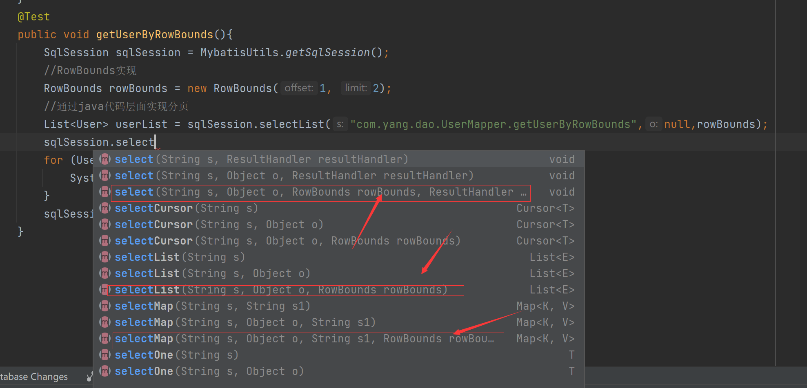
6.3 分页插件 https://pagehelper.github.io/docs/
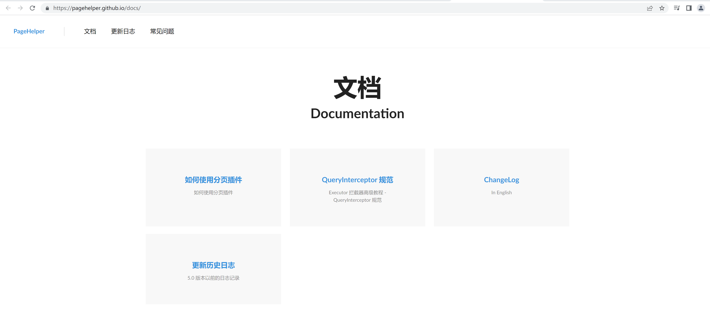
7.注解开发 7.1 使用注解开发 (1) 注解在接口上实现
1 2 @Select("select * from user") List<User> getUsers () ;
(2) 需要再核心配置文件中绑定接口！
1 2 3 4 <mappers > <mapper class ="com.yang.dao.UserMapper" /> </mappers >
(3) 测试
1 2 3 4 5 6 7 8 9 10 11 @Test public void test () { SqlSession sqlSession = MybatisUtils.getSqlSession(); UserMapper mapper = sqlSession.getMapper(UserMapper.class); List<User> users = mapper.getUsers(); for (User user : users) { System.out.println(user); } sqlSession.close(); }
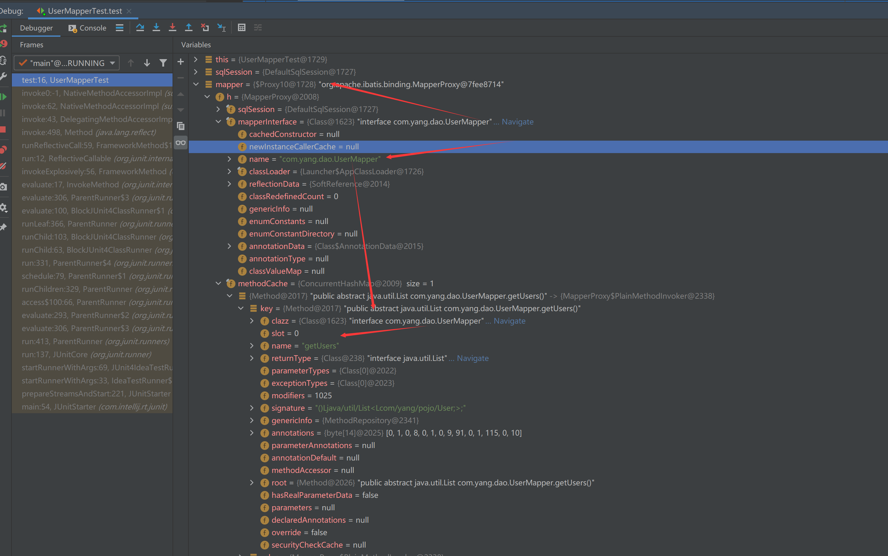
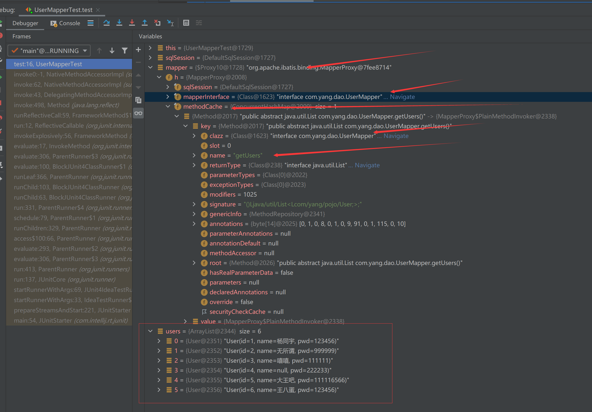
7.2 Mybatis详细的执行流程！
7.3 CRUD 我们可以在工具类创建的时候实现自动提交事务！
1 2 3 public static SqlSession getSqlSession () { return sqlSessionFactory.openSession(true ); }
1 2 3 4 5 6 7 8 9 10 11 12 13 14 15 16 17 18 19 20 21 22 23 24 package com.yang.dao;import com.yang.pojo.User;import org.apache.ibatis.annotations.*;import java.util.List;public interface UserMapper { @Select("select * from user") List<User> getUsers () ; @Select({"select * from user where id=#{id} and name=#{name}"}) User getUserById (@Param("id") int id,@Param("name") String name) ; @Insert("insert into user(id,name,pwd) values (#{id},#{name},#{pwd})") int addUser (User user) ; @Update("update user set name=#{name},pwd=#{pwd} where id=#{id}") int updateUser (User user) ; @Delete("delete from user where id=#{id}") int deleteUserById (@Param("id") int id) ; }
【注意：我们必须要讲接口注册绑定到我们的核心配置文件中！ 】
关于@Param() 注解
1 2 3 4 基本类型的参数或者String类型，需要加上 引用类型不需要加 如果只有一个基本类型的话，可以忽略，但是建议大家都加上！ 我们在SQL中引用的就是我们这里的 @Param() 中设定的属性名！
#{} ${} 区别
#{}:防止sql注入
8.Lombok
使用步骤：
(1) 在IDEA中安装Lombok插件！
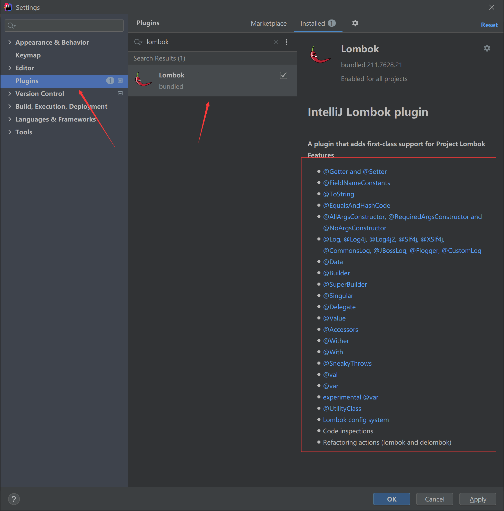
(2) 在项目中导入lombok的jar包
1 2 3 4 5 <dependency > <groupId > org.projectlombok</groupId > <artifactId > lombok</artifactId > <version > 1.18.10</version > </dependency >
(3) 在实体类上加注解即可！
1 2 3 4 5 6 7 8 9 10 11 12 13 14 15 16 17 18 @Data @AllArgsConstructor @NoArgsConstructor @Getter and @Setter @FieldNameConstants @ToString @EqualsAndHashCode @AllArgsConstructor , @RequiredArgsConstructor and @NoArgsConstructor @Log , @Log4j , @Log4j2 , @Slf4j , @XSlf4j , @CommonsLog , @JBossLog , @Flogger @Data @Builder @Singular @Delegate @Value @Accessors @Wither @SneakyThrows
说明：
1 2 3 4 5 6 @Data ：无参构造，get、set、tostring、hashcode，equals@AllArgsConstructor @NoArgsConstructor @EqualsAndHashCode @ToString @Getter
9.多对一处理
1.建表
1 2 3 4 5 6 7 8 9 10 11 12 13 14 15 16 17 18 19 20 21 CREATE TABLE `teacher` ( `id` INT (10 ) NOT NULL PRIMARY KEY, `name` VARCHAR (30 ) DEFAULT NULL )ENGINE= INNODB DEFAULT CHARSET= utf8 INSERT INTO teacher (`id`, `name`) VALUES (1 , 'hou' );CREATE TABLE `student` ( `id` INT (10 ) NOT NULL , `name` VARCHAR (30 ) DEFAULT NULL , `tid` INT (10 ) DEFAULT NULL , PRIMARY KEY (`id`), KEY `fktid` (`tid`), CONSTRAINT `fktid` FOREIGN KEY (`tid`) REFERENCES `teacher` (`id`) )ENGINE= INNODB DEFAULT CHARSET= utf8 INSERT INTO student (`id`, `name`, `tid`) VALUES (1 , 'xiao1' , 1 );INSERT INTO student (`id`, `name`, `tid`) VALUES (2 , 'xiao2' , 1 );INSERT INTO student (`id`, `name`, `tid`) VALUES (3 , 'xiao3' , 1 );INSERT INTO student (`id`, `name`, `tid`) VALUES (4 , 'xiao4' , 1 );INSERT INTO student (`id`, `name`, `tid`) VALUES (5 , 'xiao5' , 1 );
2.新建实体类
1 2 3 4 5 6 7 8 9 10 11 12 13 14 15 16 17 18 19 20 21 package com.hou.pojo;import lombok.Data;@Data public class Student { private int id; private String name; private Teacher teacher; } package com.hou.pojo;import lombok.Data;@Data public class Teacher { private int id; private String name; }
3.建立Mapper接口
1 2 3 4 5 6 7 8 9 10 11 package com.yang.dao;import com.yang.pojo.Student;import java.util.List;public interface StudentMapper { List<Student> getStudent () ; List<Student> getStudent2 () ; }
4.建立Mapper.xml
1 2 3 4 5 6 7 8 9 10 11 12 13 14 15 16 17 18 19 20 21 22 23 24 25 26 27 28 29 30 31 32 33 34 35 36 37 38 39 40 41 42 43 44 45 46 <?xml version="1.0" encoding="UTF8" ?> <!DOCTYPE mapper PUBLIC "-//mybatis.org//DTD Config 3.0//EN" "http://mybatis.org/dtd/mybatis-3-mapper.dtd" > <mapper namespace ="com.yang.dao.StudentMapper" > <select id ="getStudent2" resultMap ="StudentTeacher2" > select s.id sid,s.name sname,t.name tname,t.id from student s,teacher t where s.tid=t.id; </select > <resultMap id ="StudentTeacher2" type ="student" > <result property ="id" column ="sid" /> <result property ="name" column ="sname" /> <association property ="teacher" javaType ="Teacher" > <result property ="id" column ="id" /> <result property ="name" column ="tname" /> </association > </resultMap > <select id ="getStudent" resultMap ="StudentTeacher" > select * from student </select > <resultMap id ="StudentTeacher" type ="Student" > <result property ="id" column ="id" /> <result column ="name" property ="name" /> <association property ="teacher" column ="tid" javaType ="Teacher" select ="getTeacher" /> </resultMap > <select id ="getTeacher" resultType ="Teacher" > select * from teacher where id=#{tid} </select > </mapper >
property 映射到列结果的字段或属性。
column 数据库中的列名，或者是列的别名。
5.测试是否能够成功
1 2 3 4 5 6 7 8 9 10 11 12 13 14 15 16 17 18 19 20 21 22 23 24 25 26 27 28 29 30 import com.yang.dao.StudentMapper;import com.yang.pojo.Student;import com.yang.utils.MybatisUtils;import org.apache.ibatis.session.SqlSession;import org.junit.Test;import java.util.List;public class MyTest { @Test public void test1 () { SqlSession sqlSession = MybatisUtils.getSqlSession(); StudentMapper mapper = sqlSession.getMapper(StudentMapper.class); List<Student> student = mapper.getStudent(); for (Student st : student) { System.out.println(st); } sqlSession.close(); } @Test public void test2 () { SqlSession sqlSession = MybatisUtils.getSqlSession(); StudentMapper mapper = sqlSession.getMapper(StudentMapper.class); List<Student> student = mapper.getStudent2(); for (Student st : student) { System.out.println(st); } sqlSession.close(); } }
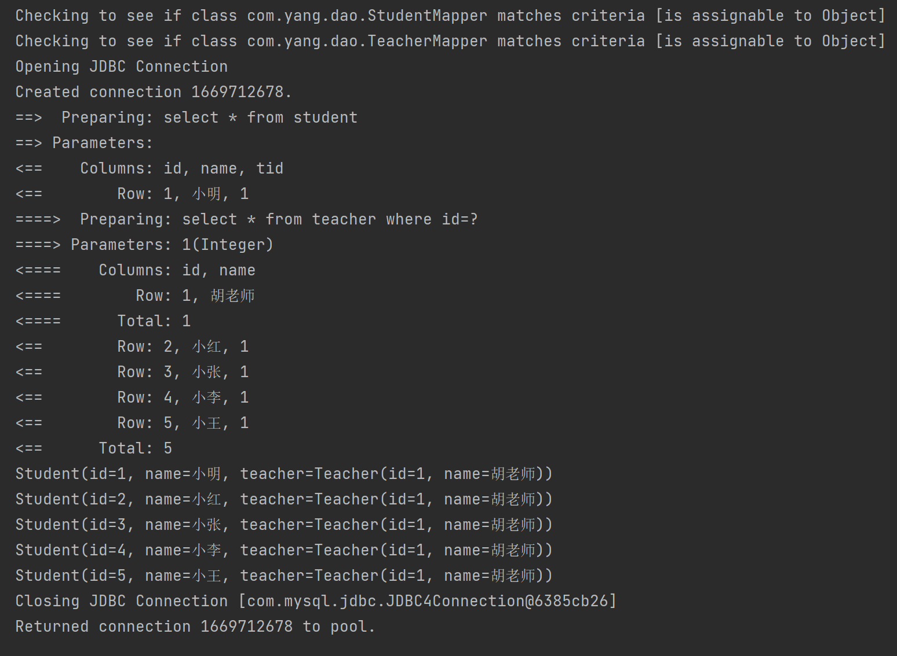
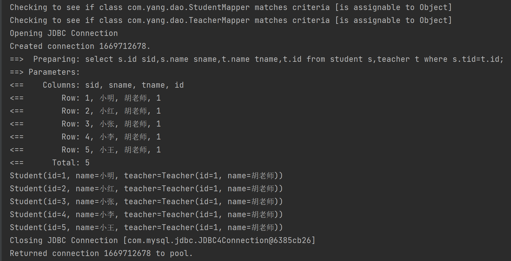
10.一对多处理
1.环境搭建
实体类
1 2 3 4 5 6 7 8 9 10 11 12 13 14 15 16 17 18 19 20 21 22 23 24 package com.yang.pojo;import lombok.Data;@Data public class Student { private int id; private String name; private int tid; } package com.yang.pojo;import lombok.Data;import java.util.List;@Data public class Teacher { private int id; private String name; private List<Student> students; }
2.按照结果查询
1 2 3 4 5 6 7 8 9 10 11 12 13 14 15 16 17 18 19 20 21 22 23 <select id ="getTeacher" resultMap ="TeacherStudent" > select s.id sid,s.name sname,t.name tname,t.id tid from student s,teacher t where s.tid=tid and s.tid=#{tid} </select > <resultMap id ="TeacherStudent" type ="Teacher" > <result property ="id" column ="tid" /> <result property ="name" column ="tname" /> <collection property ="students" ofType ="Student" > <result property ="id" column ="sid" /> <result property ="name" column ="sname" /> <result property ="tid" column ="tid" /> </collection > </resultMap >
3.按照查询嵌套处理
1 2 3 4 5 6 7 8 9 10 <select id ="getTeacher2" resultMap ="TeacherStudent2" > select * from teacher where id=#{tid}; </select > <resultMap id ="TeacherStudent2" type ="Teacher" > <collection property ="students" javaType ="ArrayList" ofType ="Student" select ="getStudentByTeacherId" column ="id" /> </resultMap > <select id ="getStudentByTeacherId" resultType ="Student" > select * from student where tid=#{id} </select >
4.测试
1 2 3 4 5 6 7 8 9 10 11 12 13 14 15 16 17 18 19 20 21 22 23 24 25 import com.yang.dao.TeacherMapper; import com.yang.pojo.Teacher; import com.yang.utils.MybatisUtils; import org.apache.ibatis.session.SqlSession; import org.junit.Test; public class MyTest { @Test public void test2(){ SqlSession sqlSession = MybatisUtils.getSqlSession(); TeacherMapper mapper = sqlSession.getMapper(TeacherMapper.class); Teacher teacher = mapper.getTeacher(1); System.out.println(teacher); sqlSession.close(); } @Test public void test3(){ SqlSession sqlSession = MybatisUtils.getSqlSession(); TeacherMapper mapper = sqlSession.getMapper(TeacherMapper.class); Teacher teacher = mapper.getTeacher2(1); System.out.println(teacher); sqlSession.close(); } }
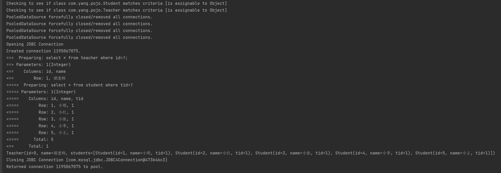
小结
关联 - association 多对一
集合 - collection 一对多
javaType & ofType
JavaType用来指定实体中属性类型
ofType映射到list中的类型，泛型中的约束类型
注意点 ：
保证sql可读性，尽量保证通俗易懂
注意字段问题
如果问题不好排查错误，使用日志
11.动态 SQL 动态sql：根据不同的条件生成不同的SQL语句
搭建环境
1 2 3 4 5 6 7 create table `blog`( `id` varchar (50 ) not null comment '博客id' , `title` varchar (100 ) not null comment '博客标题' , `author` varchar (30 ) not null comment '博客作者' , `create_time` datetime not null comment '创建时间' , `views` int (30 ) not null comment '浏览量' )ENGINE= InnoDB DEFAULT CHARSET= utf8
2.实体类
1 2 3 4 5 6 7 8 9 10 11 12 13 package com.yang.pojo;import lombok.Data;import java.util.Date;@Data public class Blog { private String id; private String title; private String author; private Date createTime; private int views; }
3.核心配置
1 2 3 4 5 6 <settings > <setting name ="logImpl" value ="STDOUT_LOGGING" /> <setting name ="mapUnderscoreToCamelCase" value ="true" /> </settings >
4.新建随机生成ID包
1 2 3 4 5 6 7 8 9 10 package com.yang.utils;import java.util.UUID;@SuppressWarnings("all") public class IDutils { public static String getId () { return UUID.randomUUID().toString().replaceAll("-" ,"" ); } }
5.Mapper.xml
1 2 3 4 5 6 7 8 9 10 <?xml version="1.0" encoding="UTF8" ?> <!DOCTYPE mapper PUBLIC "-//mybatis.org//DTD Config 3.0//EN" "http://mybatis.org/dtd/mybatis-3-mapper.dtd" > <mapper namespace ="com.yang.dao.BlogMapper" > <insert id ="addBlog" parameterType ="Blog" > insert into blog (id,title,author,create_time,views) values (#{id},#{title},#{author},#{createTime},#{views}) </insert > </mapper >
6.测试类：添加数据
1 2 3 4 5 6 7 8 9 10 11 12 13 14 15 16 17 18 19 20 21 22 23 24 25 @Test public void addInitBlog () { SqlSession sqlSession = MybatisUtils.getSqlSession(); BlogMapper mapper = sqlSession.getMapper(BlogMapper.class); Blog blog = new Blog (); blog.setId(IDutils.getId()); blog.setTitle("Mybatis如此简单" ); blog.setAuthor("星" ); blog.setCreateTime(new Date ()); blog.setViews(9999 ); mapper.addBlog(blog); blog.setId(IDutils.getId()); blog.setTitle("java如此简单" ); mapper.addBlog(blog); blog.setId(IDutils.getId()); blog.setTitle("Spring如此简单" ); mapper.addBlog(blog); blog.setId(IDutils.getId()); blog.setTitle("微服务如此简单" ); mapper.addBlog(blog); sqlSession.close(); }
11.1 if 1 2 3 4 5 6 7 8 9 10 11 <select id ="queryBlogIF" parameterType ="Map" resultType ="Blog" > select * from blog <where > <if test ="title!=null" > title=#{title} </if > <if test ="author!=null" > and author=#{author} </if > </where > </select >
测试
1 2 3 4 5 6 7 8 9 10 11 12 13 @Test public void addInitBlog2 () { SqlSession sqlSession = MybatisUtils.getSqlSession(); BlogMapper mapper = sqlSession.getMapper(BlogMapper.class); HashMap map = new HashMap (); map.put("author" ,"星" ); List<Blog> blogs = mapper.queryBlogIF(map); for (Blog blog: blogs) { System.out.println(blog); } sqlSession.close(); }
11.2 choose、when、otherwise choose 元素，它有点像 Java 中的 switch 语句
1 2 3 4 5 6 7 8 9 10 11 12 13 14 15 16 <select id ="queryBlogChoose" parameterType ="map" resultType ="blog" > select * from blog <where > <choose > <when test ="title!=null" > title=#{title} </when > <when test ="author!=null" > and author=#{author} </when > <otherwise > and views=#{views} </otherwise > </choose > </where > </select >
测试
1 2 3 4 5 6 7 8 9 10 11 12 13 @Test public void addInitBlog3 () { SqlSession sqlSession = MybatisUtils.getSqlSession(); BlogMapper mapper = sqlSession.getMapper(BlogMapper.class); HashMap map = new HashMap (); map.put("views" ,9999 ); List<Blog> blogs = mapper.queryBlogChoose(map); for (Blog blog: blogs) { System.out.println(blog); } sqlSession.close(); }
11.3 trim、where、set
1 2 3 4 5 6 7 8 9 10 11 12 <update id ="updateBlog" parameterType ="map" > update blog <set > <if test ="title!=null" > title=#{title}, </if > <if test ="author!=null" > author=#{author} </if > </set > where id=#{id} </update >
测试
1 2 3 4 5 6 7 8 9 10 11 12 13 14 15 @Test public void addInitBlog4 () { SqlSession sqlSession = MybatisUtils.getSqlSession(); BlogMapper mapper = sqlSession.getMapper(BlogMapper.class); HashMap map = new HashMap (); map.put("author" ,"星2" ); map.put("id" ,"802518454f744d8ca59c9533929bfd4a" ); int i = mapper.updateBlog(map); if (i>0 ){ System.out.println("成功" ); } sqlSession.close(); }
11.4 SQL片段
有些时候我们有一些公共部分
使用sql便签抽取公共部分
在使用的地方使用include标签
1 2 3 4 5 6 7 8 9 10 11 12 13 14 15 16 <sql id ="if-title-author" > <if test ="title!=null" > title=#{title} </if > <if test ="author!=null" > and author=#{author} </if > </sql > <select id ="queryBlogIF" parameterType ="Map" resultType ="Blog" > select * from blog <where > <include refid ="if-title-author" > </include > </where > </select >
注意：
11.5 for-each 1 2 3 4 5 6 7 8 9 10 <select id ="queryBlogForeach" parameterType ="map" resultType ="blog" > select * from blog <where > <foreach collection ="ids" item ="id" open ="and (" close =")" separator ="or" > id = #{id} </foreach > </where > </select >
测试
1 2 3 4 5 6 7 8 9 10 11 12 @Test public void queryBlogForeach () { SqlSession sqlSession = MybatisUtils.getSqlSession(); BlogMapper mapper = sqlSession.getMapper(BlogMapper.class); HashMap map = new HashMap (); ArrayList<Integer> ids = new ArrayList <Integer>(); ids.add(1 ); ids.add(2 ); map.put("ids" ,ids); System.out.println(mapper.queryBlogForeach(map)); sqlSession.close(); }
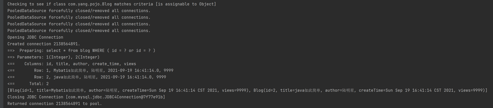
12.缓存 12.1 一级缓存 开启日志
测试一个session中查询两次相同记录。
缓存失效：
映射语句文件中的所有 insert、update 和 delete 语句会刷新缓存。
查询不同的mapper.xml
手动清除缓存
1 sqlSession.clearCache();
一级缓存默认开启，只在一次sqlseesion中有效
1 2 3 <select id ="queryUserById" resultType ="user" > select * from user where id=#{id} </select >
1 2 3 4 5 6 7 8 9 10 11 @Test public void test () { SqlSession sqlSession = MybatisUtils.getSqlSession(); UserMapper mapper = sqlSession.getMapper(UserMapper.class); User user = mapper.queryUserById(1 ); System.out.println(user); System.out.println("==========================" ); User user1 = mapper.queryUserById(1 ); System.out.println(user1); sqlSession.close(); }
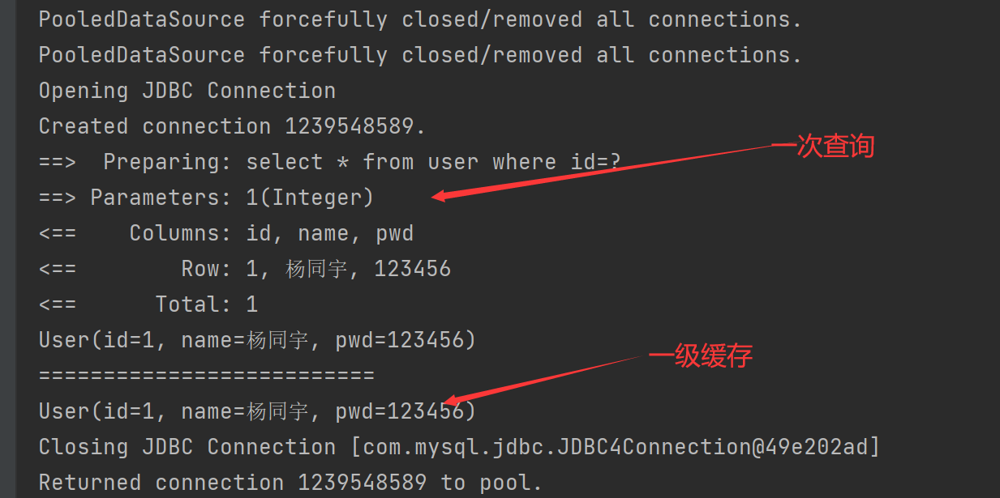
12.2 二级缓存
开启全局缓存，基于namespacnamespace
1 <setting name ="cacheEnabled" value ="true" />
1 2 3 4 <cache eviction ="FIFO" flushInterval ="60000" size ="512" readOnly ="true" />
1 2 3 <select id ="queryUserById" resultType ="user" useCache ="false" > select * from user where id=#{id} </select >
test
1 2 3 4 5 6 7 8 9 10 11 12 13 14 15 @Test public void test () { SqlSession sqlSession = MybatisUtils.getSqlSession(); SqlSession sqlSession1 = MybatisUtils.getSqlSession(); UserMapper userMapper = sqlSession.getMapper(UserMapper.class); User user = userMapper.queryUserByid(1 ); System.out.println(user); sqlSession.close(); UserMapper userMapper1 = sqlSession1.getMapper(UserMapper.class); User user1 = userMapper1.queryUserByid(1 ); System.out.println(user1); System.out.println(user==user1); sqlSession1.close(); }
实体类
1 2 3 4 5 6 7 8 9 10 11 12 13 14 15 16 import lombok.Data;import java.io.Serializable;@Data public class User implements Serializable { private int id; private String name; private String pwd; public User (int id, String name, String pwd) { this .id = id; this .name = name; this .pwd = pwd; } }
小结：
只有开启了二级缓存，在Mapper下有效
所有数据都会先放在一级缓存
只有当回话提交，或者关闭的时候，才会提交到二级缓存
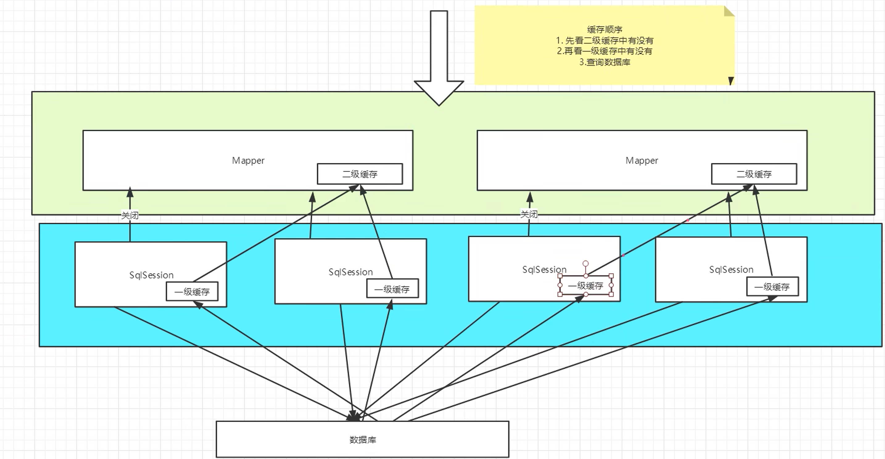
12.3 自定义缓存-ehcache
Ehcache是一种广泛使用的开源Java分布式缓存，主要面向通用缓存
1 2 3 4 5 6 <!-- https://mvnrepository.com/artifact/org.mybatis.caches/mybatis-ehcache --> <dependency> <groupId>org.mybatis.caches</groupId> <artifactId>mybatis-ehcache</artifactId> <version>1.2.0</version> </dependency>
1 2 3 4 5 6 7 8 9 10 11 12 13 14 <?xml version="1.0" encoding="UTF8" ?> <!DOCTYPE mapper PUBLIC "-//mybatis.org//DTD Config 3.0//EN" "http://mybatis.org/dtd/mybatis-3-mapper.dtd" > <mapper namespace ="com.yang.dao.UserMapper" > <cache type ="org.mybatis.caches.ehcache.EhcacheCache" /> <select id ="queryUserById" resultType ="user" useCache ="true" > select * from user where id=#{id} </select > <update id ="updateUser" parameterType ="user" > update user set name=#{name},pwd=#{pwd} where id=#{id} </update > </mapper >
ehcache.xml
1 2 3 4 5 6 7 8 9 10 11 12 13 14 15 16 17 18 19 20 21 22 23 24 25 26 27 28 29 30 31 32 33 34 35 36 37 38 39 40 41 42 43 44 45 46 47 48 49 50 51 52 <?xml version="1.0" encoding="UTF-8" ?> <ehcache xmlns:xsi ="http://www.w3.org/2001/XMLSchema-instance" xsi:noNamespaceSchemaLocation ="http://ehcache.org/ehcache.xsd" updateCheck ="false" > <diskStore path ="java.io.tmpdir/Tmp_EhCache" /> <defaultCache eternal ="false" maxElementsInMemory ="10000" overflowToDisk ="false" diskPersistent ="false" timeToIdleSeconds ="1800" timeToLiveSeconds ="259200" memoryStoreEvictionPolicy ="LRU" /> <cache name ="cloud_user" eternal ="false" maxElementsInMemory ="5000" overflowToDisk ="false" diskPersistent ="false" timeToIdleSeconds ="1800" timeToLiveSeconds ="1800" memoryStoreEvictionPolicy ="LRU" /> </ehcache >
13.4 自定义缓存类 1 2 3 4 5 6 7 8 9 10 11 12 13 14 15 16 17 18 19 20 21 22 23 24 25 26 27 28 29 30 31 32 33 34 35 36 37 package com.yang.utils;import org.apache.ibatis.cache.Cache;public class MyCache implements Cache { public String getId () { return null ; } public void putObject (Object o, Object o1) { } public Object getObject (Object o) { return null ; } public Object removeObject (Object o) { return null ; } public void clear () { } public int getSize () { return 0 ; } }
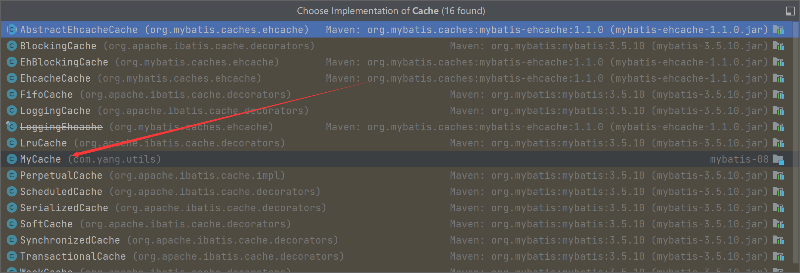